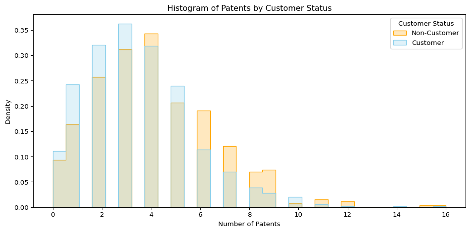
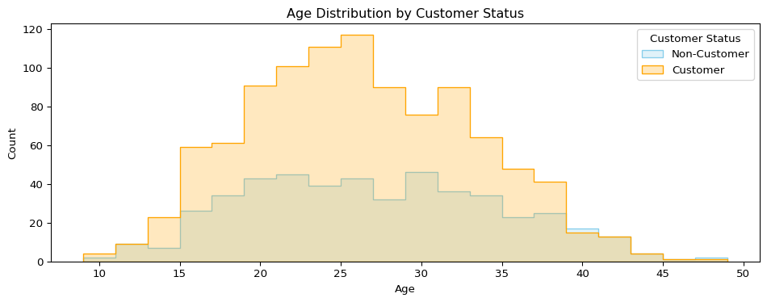
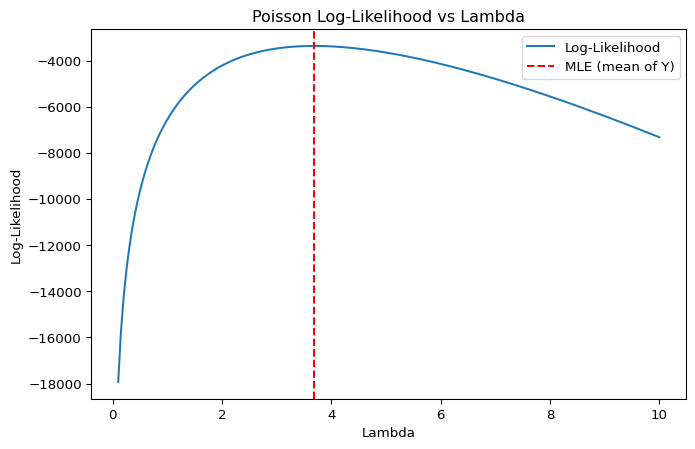
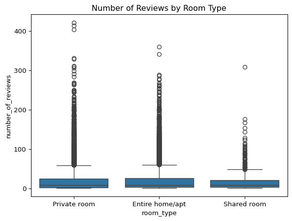

Code
import pandas as pd
df = pd.read_csv('blueprinty.csv')
df.head()Blueprinty is a small firm that makes software for developing blueprints specifically for submitting patent applications to the US patent office. Their marketing team would like to make the claim that patent applicants using Blueprinty’s software are more successful in getting their patent applications approved. Ideal data to study such an effect might include the success rate of patent applications before using Blueprinty’s software and after using it. Unfortunately, such data is not available.
However, Blueprinty has collected data on 1,500 mature (non-startup) engineering firms. The data include each firm’s number of patents awarded over the last 5 years, regional location, age since incorporation, and whether or not the firm uses Blueprinty’s software. The marketing team would like to use this data to make the claim that firms using Blueprinty’s software are more successful in getting their patent applications approved.
import pandas as pd
df = pd.read_csv('blueprinty.csv')
df.head()import pandas as pd
import matplotlib.pyplot as plt
import seaborn as sns
df = pd.read_csv('blueprinty.csv')
means = df.groupby("iscustomer")["patents"].mean().reset_index()
means.columns = ["Customer Status", "Mean Patents"]
plt.figure(figsize=(10, 5))
sns.histplot(data=df, x="patents", hue="iscustomer", bins=30,
element="step", stat="density", common_norm=False,
palette={0: "skyblue", 1: "orange"}, legend=True)
plt.title("Histogram of Patents by Customer Status")
plt.xlabel("Number of Patents")
plt.ylabel("Density")
plt.legend(title="Customer Status", labels=["Non-Customer", "Customer"])
plt.tight_layout()
plt.show()
| Customer Status | Mean Patents |
|---|---|
| Non-Customer | 3.473013 |
| Customer | 4.133056 |
From the chart and table, we can see that Blueprinty customers tend to have more patents than non-customers. On average, customers have 4.13 patents, while non-customers have 3.47. The histogram shows that customers are more likely to appear in the higher end of the distribution.
However, it’s important to remember that customers are not randomly selected. That means we cannot say for sure that being a customer causes someone to have more patents. It’s possible that customers are already different before joining—perhaps they are more experienced, innovative, or come from regions or industries with higher patent activity.
import pandas as pd
import matplotlib.pyplot as plt
import seaborn as sns
df = pd.read_csv("blueprinty.csv")
mean_age = df.groupby("iscustomer")["age"].mean().reset_index()
mean_age.columns = ["Customer Status", "Mean Age"]
region_counts = pd.crosstab(df["region"], df["iscustomer"])
region_counts.columns = ["Non-Customer", "Customer"]
region_props = region_counts.div(region_counts.sum(axis=0), axis=1).round(3)
plt.figure(figsize=(10, 4))
sns.histplot(data=df, x="age", hue="iscustomer", bins=20, palette=["orange", "skyblue"], element="step")
plt.title("Age Distribution by Customer Status")
plt.xlabel("Age")
plt.ylabel("Count")
plt.legend(title="Customer Status", labels=["Non-Customer", "Customer"])
plt.tight_layout()
plt.show()
| Customer Status | Mean Age |
|---|---|
| Non-Customer (0) | 26.10 |
| Customer (1) | 26.90 |
Customers tend to be slightly older than non-customers. The age distribution plot shows that customers are more concentrated in the 20–35 age range, while non-customers are more evenly spread out. Although the difference is modest, it suggests that age may play a role in who becomes a customer, and should be considered when comparing outcomes like patent ownership.
import pandas as pd
import matplotlib.pyplot as plt
import seaborn as sns
df = pd.read_csv("blueprinty.csv")
region_counts = pd.crosstab(df["region"], df["iscustomer"])
region_counts.columns = ["Non-Customer", "Customer"]
region_props = region_counts.div(region_counts.sum(axis=0), axis=1).round(3)
region_props.plot(kind="bar", figsize=(10, 5), color=["#fdbf6f", "#a6cee3"])
plt.title("Region Distribution by Customer Status")
plt.xlabel("Region")
plt.ylabel("Proportion within Group")
plt.legend(title="Customer Status")
plt.xticks(rotation=45)
plt.tight_layout()
| Region | Non-Customer | Customer |
|---|---|---|
| Midwest | 0.184 | 0.077 |
| Northeast | 0.268 | 0.682 |
| Northwest | 0.155 | 0.060 |
| South | 0.153 | 0.073 |
| Southwest | 0.240 | 0.108 |
There are also notable differences in regional distribution. Customers are overwhelmingly concentrated in the Northeast (68%), whereas non-customers are more evenly distributed across regions, especially in the Midwest and Southwest. This uneven geographic pattern indicates that customer status is not random and may be influenced by location-based factors. As with age, region should be taken into account when analyzing differences between customers and non-customers.
Since our outcome variable of interest can only be small integer values per a set unit of time, we can use a Poisson density to model the number of patents awarded to each engineering firm over the last 5 years. We start by estimating a simple Poisson model via Maximum Likelihood.
Suppose we observe independent draws \(Y_1, Y_2, \dots, Y_n \sim \text{Poisson}(\lambda)\),
where the probability mass function of the Poisson distribution is:
\(f(Y_i \mid \lambda) = \dfrac{e^{-\lambda} \lambda^{Y_i}}{Y_i!}\)
Then, the likelihood function for the full sample is:
\(\mathcal{L}(\lambda) = \prod_{i=1}^{n} f(Y_i \mid \lambda) = \prod_{i=1}^{n} \dfrac{e^{-\lambda} \lambda^{Y_i}}{Y_i!} = e^{-n\lambda} \lambda^{\sum_{i=1}^{n} Y_i} \prod_{i=1}^{n} \dfrac{1}{Y_i!}\)
Since it’s easier to work with, we usually take the logarithm of the likelihood function.
This gives us the log-likelihood:
\(\log \mathcal{L}(\lambda) = \sum_{i=1}^{n} \left( -\lambda + Y_i \log \lambda - \log(Y_i!) \right) = -n\lambda + \left( \sum_{i=1}^{n} Y_i \right) \log \lambda - \sum_{i=1}^{n} \log(Y_i!)\)
To better understand the relationship between λ (lambda) and the observed data, we now walk through a full maximum likelihood estimation process for the Poisson model.
import numpy as np
import matplotlib.pyplot as plt
from scipy.optimize import minimize_scalar
from scipy.special import gammaln
import pandas as pd
df = pd.read_csv("blueprinty.csv")
Y = df["patents"].values
# ---- Step 1: Define log-likelihood function ----
def poisson_loglikelihood(lam, Y):
if lam <= 0:
return -np.inf
return np.sum(Y * np.log(lam) - lam - gammaln(Y + 1))
# ---- Step 2: Plot lambda vs log-likelihood ----
lambdas = np.linspace(0.1, 10, 200)
loglik_values = [poisson_loglikelihood(lam, Y) for lam in lambdas]
plt.figure(figsize=(8, 5))
plt.plot(lambdas, loglik_values, label="Log-Likelihood")
plt.axvline(x=np.mean(Y), color='red', linestyle='--', label='MLE (mean of Y)')
plt.title("Poisson Log-Likelihood vs Lambda")
plt.xlabel("Lambda")
plt.ylabel("Log-Likelihood")
plt.legend()
plt.show()
# ---- Step 3: Analytical MLE solution ----
lambda_mle_analytical = np.mean(Y)
# ---- Step 4: Numerical MLE using optimization ----
neg_loglik = lambda lam: -poisson_loglikelihood(lam, Y)
opt_result = minimize_scalar(neg_loglik, bounds=(0.01, 20), method='bounded')
lambda_mle_numerical = opt_result.x
# Collect results
results = {
"Analytical MLE (mean of Y)": round(lambda_mle_analytical, 4),
"Numerical MLE (optimize)": round(lambda_mle_numerical, 4)
}
The plot above shows how the Poisson log-likelihood changes as we vary \(\lambda\), the expected number of patents per firm. The curve reaches its peak at \(\lambda = 3.6847\), which is the value that makes the observed data most likely — this is our Maximum Likelihood Estimate (MLE).
The table below confirms that both the analytical solution (sample mean) and the numerical optimization produce exactly the same MLE value. This gives us confidence that our model is correctly specified and our estimation is reliable.
| Method | MLE Value |
|---|---|
| Analytical MLE (mean of Y) | 3.6847 |
| Numerical MLE (optimize) | 3.6847 |
Next, we extend our simple Poisson model to a Poisson Regression Model such that \(Y_i = \text{Poisson}(\lambda_i)\) where \(\lambda_i = \exp(X_i'\beta)\). The interpretation is that the success rate of patent awards is not constant across all firms (\(\lambda\)) but rather is a function of firm characteristics \(X_i\). Specifically, we will use the covariates age, age squared, region, and whether the firm is a customer of Blueprinty.
import pandas as pd
import numpy as np
from scipy.optimize import minimize
from scipy.special import gammaln
import statsmodels.api as sm
# ---- Step 0: Load and prepare the data ----
df = pd.read_csv("blueprinty.csv")
df["age_sq"] = df["age"] ** 2
region_dummies = pd.get_dummies(df["region"], drop_first=True)
# Construct the design matrix X
X = pd.concat([
pd.Series(1, index=df.index, name="intercept"),
df[["age", "age_sq", "iscustomer"]],
region_dummies
], axis=1)
y = df["patents"].values
X_matrix = X.values
# ---- Step 1: Define log-likelihood function with clipping to prevent overflow ----
def poisson_loglikelihood(beta, Y, X):
beta = np.asarray(beta, dtype=np.float64)
X = np.asarray(X, dtype=np.float64)
xb = np.dot(X, beta)
xb = np.clip(xb, -50, 50) # prevent overflow in exp
lam = np.exp(xb)
return np.sum(Y * xb - lam - gammaln(Y + 1))
# ---- Step 2: Define negative log-likelihood for minimization ----
def neg_loglikelihood(beta, Y, X):
return -poisson_loglikelihood(beta, Y, X)
# ---- Step 3: Numerical optimization to find MLE ----
beta_init = np.zeros(X.shape[1])
result = minimize(neg_loglikelihood, beta_init, args=(y, X_matrix), method="BFGS")
beta_hat = result.x
hessian_inv = result.hess_inv
se_hat = np.sqrt(np.diag(hessian_inv))
# ---- Step 4: Present coefficient table ----
results_table = pd.DataFrame({
"Coefficient": beta_hat.round(4),
"Std. Error": se_hat.round(4)
}, index=X.columns)
results_table| Variable | Coefficient | Std. Error |
|---|---|---|
| intercept | -0.5100 | 0.0591 |
| age | 0.1487 | 0.0080 |
| age_sq | -0.0030 | 0.0002 |
| iscustomer | 0.2076 | 0.0289 |
| Northeast | 0.0292 | 0.0540 |
| Northwest | -0.0176 | 0.0668 |
| South | 0.0566 | 0.0660 |
| Southwest | 0.0506 | 0.0597 |
From our estimated Poisson regression model:
age is 0.1487, indicating that older firms tend to receive more patents.age_sq (−0.0030) suggests diminishing returns to age — patenting increases with age but at a decreasing rate.iscustomer is 0.2076, meaning that being a Blueprinty customer increases the log of expected patent counts by this amount.To make this more interpretable, we exponentiate the iscustomer coefficient:
\(\exp(0.2076) \approx 1.23\)
This implies that being a customer is associated with approximately a 23% increase in expected patent output, holding other variables constant.
Because the coefficients are on a log scale, we simulate two counterfactual scenarios:
iscustomer = 0)iscustomer = 1)We use our fitted model to compute:
\(\text{Average difference} = 0.79\)
This means Blueprinty customers are predicted to earn 0.79 more patents, on average, than they would have if they weren’t customers.
Our analysis suggests that Blueprinty’s software has a positive and meaningful effect on patent success. While the impact of being a customer translates to fewer than one additional patent over five years, this is a substantial gain in innovation output, especially when aggregated across a large number of firms. These results highlight Blueprinty’s potential to support R&D productivity.
AirBnB is a popular platform for booking short-term rentals. In March 2017, students Annika Awad, Evan Lebo, and Anna Linden scraped of 40,000 Airbnb listings from New York City. The data include the following variables:
import pandas as pd
df = pd.read_csv('airbnb.csv')
df.head()Before modeling, we explore and clean the dataset to ensure that it contains only relevant and usable observations. We also perform some basic exploratory data analysis (EDA) to better understand the distribution and relationships among key variables.
import pandas as pd
df = pd.read_csv('airbnb.csv')
df.isnull().sum()
columns_to_keep = [
"room_type", "bathrooms", "bedrooms", "price",
"number_of_reviews", "review_scores_cleanliness",
"review_scores_location", "review_scores_value",
"instant_bookable"
]
df_clean = df.dropna(subset=columns_to_keep)
df_clean.shape
df_clean["price"] = df_clean["price"].replace("[\$,]", "", regex=True).astype(float)
df_clean["instant_bookable"] = df_clean["instant_bookable"].map({"t": 1, "f": 0})
room_dummies = pd.get_dummies(df_clean["room_type"], drop_first=True)
df_clean = pd.concat([df_clean, room_dummies], axis=1)
room_dummies = pd.get_dummies(df_clean["room_type"], drop_first=True)
df_clean = pd.concat([df_clean, room_dummies], axis=1)
df_clean[["price", "bathrooms", "bedrooms", "number_of_reviews"]].describe()Below is a summary of the main numeric variables, including price, number of bathrooms and bedrooms, and the number of reviews (which we will use as a proxy for bookings):
| Statistic | price |
bathrooms |
bedrooms |
number_of_reviews |
|---|---|---|---|---|
| Count | 30160 | 30160 | 30160 | 30160 |
| Mean | 140.21 | 1.12 | 1.15 | 21.17 |
| Std. Dev. | 188.39 | 0.38 | 0.70 | 32.01 |
| Min | 10.00 | 0.00 | 0.00 | 1.00 |
| 25% | 70.00 | 1.00 | 1.00 | 3.00 |
| 50% | 103.00 | 1.00 | 1.00 | 8.00 |
| 75% | 169.00 | 1.00 | 1.00 | 26.00 |
| Max | 10000.00 | 6.00 | 10.00 | 421.00 |
The average nightly price for a listing is $140, but prices vary widely, with some as low as $10 and a few as high as $10,000 — indicating potential outliers. Most listings have just one bathroom and bedroom. The average number of reviews is 21.17, but the maximum reaches 421, which suggests a strong right-skew in review counts. This supports the idea that some listings are booked (and reviewed) far more frequently than others.
import seaborn as sns
import matplotlib.pyplot as plt
import pandas as pd
df = pd.read_csv('airbnb.csv')
columns_to_keep = [
"room_type", "bathrooms", "bedrooms", "price",
"number_of_reviews", "review_scores_cleanliness",
"review_scores_location", "review_scores_value",
"instant_bookable"
]
df_clean = df.dropna(subset=columns_to_keep)
sns.boxplot(x="room_type", y="number_of_reviews", data=df_clean)
plt.title("Number of Reviews by Room Type")
plt.show()
The boxplot shows how the number of reviews differs by room type. Private rooms and entire homes/apartments tend to have a wider spread of review counts, with many listings receiving over 100 reviews. Shared rooms receive fewer reviews on average. This suggests that travelers may prefer private or full-space options, and that those listings are likely booked more often.
import seaborn as sns
import matplotlib.pyplot as plt
import pandas as pd
df = pd.read_csv('airbnb.csv')
columns_to_keep = [
"room_type", "bathrooms", "bedrooms", "price",
"number_of_reviews", "review_scores_cleanliness",
"review_scores_location", "review_scores_value",
"instant_bookable"
]
df_clean = df.dropna(subset=columns_to_keep)
sns.scatterplot(x="price", y="number_of_reviews", data=df_clean)
plt.xlim(0, 500) # Remove extreme outliers
plt.title("Price vs Number of Reviews")
plt.show()
The scatterplot reveals the relationship between listing price and number of reviews. Overall, we see that lower-priced listings tend to have more reviews, while higher-priced listings receive fewer. This inverse relationship is intuitive — cheaper listings are more accessible to a wider range of guests, potentially leading to higher booking and review rates. However, there is still significant variability, especially among listings priced under $200.
We now build a Poisson regression model to understand what factors are associated with higher booking activity on Airbnb, using number_of_reviews as a proxy for the number of bookings.
import statsmodels.api as sm
import pandas as pd
# Load dataset
df = pd.read_csv("airbnb.csv")
# Drop missing values
columns_to_keep = [
"room_type", "bathrooms", "bedrooms", "price",
"number_of_reviews", "review_scores_cleanliness",
"review_scores_location", "review_scores_value",
"instant_bookable"
]
df_clean = df.dropna(subset=columns_to_keep)
# Clean and transform variables
df_clean["price"] = df_clean["price"].replace("[\$,]", "", regex=True).astype(float)
df_clean["instant_bookable"] = df_clean["instant_bookable"].map({"t": 1, "f": 0})
# Create dummy variables for room_type
room_dummies = pd.get_dummies(df_clean["room_type"], drop_first=True)
df_clean = pd.concat([df_clean, room_dummies], axis=1)
# Define predictors and outcome
X_model = df_clean[[
"price",
"review_scores_cleanliness",
"review_scores_location",
"review_scores_value",
"instant_bookable",
"Private room",
"Shared room"
]]
X_model = sm.add_constant(X_model).astype(float)
y_model = df_clean["number_of_reviews"]
# Fit the Poisson regression model
poisson_model = sm.GLM(y_model, X_model, family=sm.families.Poisson()).fit()
poisson_model.summary()Below is a summary of the estimated coefficients and their interpretation:
| Variable | Coefficient | Std. Error | p-value | Interpretation |
|---|---|---|---|---|
| Intercept | 3.5554 | 0.015 | 0.000 | Baseline log review count |
| Price | −0.0000022 | 0.0000075 | 0.769 | No significant effect |
| Cleanliness Score | 0.1135 | 0.001 | 0.000 | Higher cleanliness → more reviews |
| Location Score | −0.0794 | 0.002 | 0.000 | Slightly lower reviews with higher location |
| Value Score | −0.0921 | 0.002 | 0.000 | Slightly lower reviews with higher value |
| Instant Bookable | 0.3331 | 0.003 | 0.000 | +40% more reviews if instantly bookable |
| Private Room | −0.0319 | 0.003 | 0.000 | ~3% fewer reviews than Entire home/apt |
| Shared Room | −0.2719 | 0.009 | 0.000 | ~24% fewer reviews than Entire home/apt |
price variable does not have a statistically significant effect on the number of reviews.